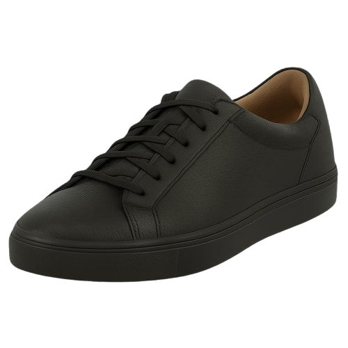

Sneakers
Originalmente criados no final do século XIX como calçados esportivos com solado de borracha, os sneakers evoluíram para um dos ícones mais influentes da moda contemporânea. Do basquete às passarelas, tornaram-se símbolo de conforto e expressão pessoal. Para um visual moderno, use sneakers minimalistas com alfaiataria ou aposte em modelos mais ousados com peças streetwear. Eles transitam com naturalidade entre ambientes casuais e criativos, sendo ideais para quem busca estilo sem abrir mão da praticidade.
